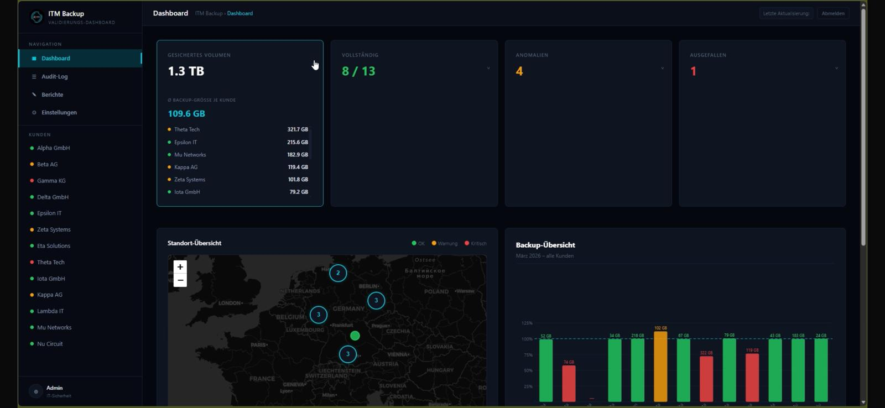
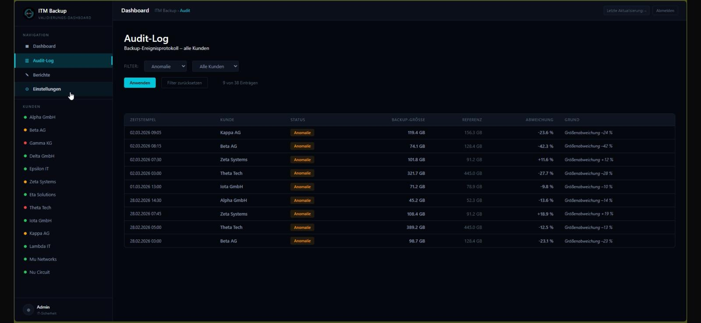
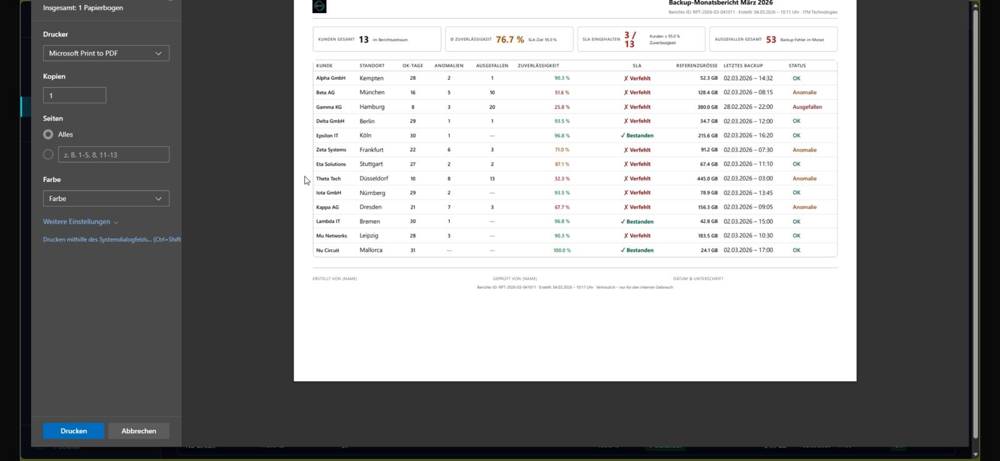

Responsibility
Concept, backend, frontend
Timeframe
Since 2026
Status
In Development
Project Description
Internal web dashboard for ITM Technologies for centralized monitoring and validation of customer backups. The goal is a consolidated view of all backup sources with clear status signals, KPI overview, and a complete audit trail for administrative review decisions.
Built around classic layered separation (routes, models, services) for maintainability and extensibility. Dark-theme UI in ITM branding with a cyan accent colour; deliberately without npm packages or JS frameworks to minimize the attack surface.
Technical Approach
- ° Python with FastAPI on the backend
- ° Jinja2 for server-side templating
- ° Vanilla JavaScript for interactive components
- ° Custom CSS without Tailwind or Bootstrap
- ° Pydantic for data validation, Pydantic Settings for configuration management
- ° Deliberately no npm packages or JS frameworks, to minimize the attack surface
Features
- ° Customer overview with traffic-light status (green / yellow / red)
- ° KPI cards for total backups, success rate, open reviews, and critical errors
- ° Heatmap visualizing backup health across customers and timeframes
- ° Audit trail logging and documenting every review decision
- ° Overlay-based secondary pages for settings, reports, and full audit view
Focus Areas
Security: Strict Content Security Policy, HTTP security headers (X-Frame-Options, HSTS, Referrer-Policy), and HttpOnly cookies as the foundation for upcoming authentication.
Architecture: Modular layered separation (routes, models, services) for maintainability and extensibility. Clear separation between server-side rendering and targeted frontend interactivity.
UX: Dark theme in ITM branding with a cyan accent. Consistent status signals (traffic-light logic) and overlay-based secondary pages for a focused main view.
Current UI


